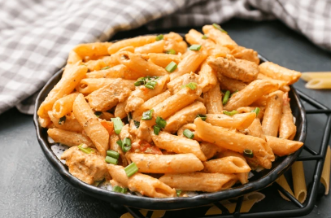

Creamy Cajun Chicken Pasta
Home

Description
Quick, easy and delicious, this Creamy Cajun Chicken Pasta features perfectly cooked pasta,
fried chicken, coated with delicious Cajun spices, and a simple cream and tomato sauce.
Ready in just 30 minutes this easy Cajun pasta recipe is set to be your new favourite weeknight dinner!
Ingredients
- Chicken breast
- Cooking spray oil
- Smoked paprika
- Garlic powder
- Onion powder
- Cayenne powder
- Salt
- Pepper
- Oregano
- Onion
- Garlic
- Chopped tomatoes
- Dry penne pasta
- Chicken stock
- Cream cheese
Steps
- Dice Chicken into cubes
- Spray with cooking oil
- Season with seasoioning listed above
- Add chicken to an oiled pan with high heat and cook until halfway done
- Add diced onion
- Add diced garlic
- Move to the side of pan
- Add chopped tomatoes, uncooked pasta and chicken stock
- Bring to a light boil
- Cover and let it simmer for 10-12 minutes on low heat
- Add cream cheese
- Mix
- Optionally garnish with parsley
And there you have it, an easy to make hot pasta dish for you to enjoy.